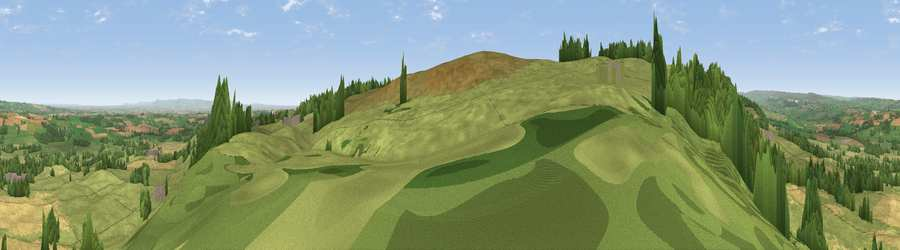

Viewpoint near East Witton
#6596 in England · top 5% of its area beats it · near East Witton · path 213 mWhere it is
The exact computed spot (SE 16300 84075). Click the marker for map links.
Public access: the nearest public right of way is about 213 m away — the final stretch may cross private land. Computed from Natural England's CRoW access layer and OpenStreetMap rights of way — not the legal definitive map. Always verify locally.
The view, rendered

A 360° render of this exact spot computed from the terrain model, tree cover and land cover — summer colours, afternoon light, calibrated against photographs of famous viewpoints. Real trees, hedges and buildings will differ in detail.
The panorama
Grey silhouette: terrain skyline in each direction (720 bearings, Earth curvature and refraction included). Dashed green: skyline with trees (+15 m) and buildings (+8 m) as obstacles. Blue strip: how far the ground is visible on each bearing.
Where the view opens
Wedge length = distance to the farthest visible ground on that bearing (vegetation-aware). Rings at 10, 25 and 50 km.
What fills the view
63% grassland · 22% cropland · 14% woodland ·
Angular shares of the visible panorama (visual magnitude), not map area. Landscape diversity 0.41 (0–1 Shannon).
Key numbers
More beautiful places nearby
The staircase of upgrades: each row has a higher view potential than everything closer. Driving times are estimates from straight-line distance, calibrated against real road routing — check an actual route before setting out.
| Place | Direction | Drive | Score |
|---|---|---|---|
| Viewpoint near East Witton | WNW · 1 km | ~3 min | 72.0 |
| Viewpoint near East Witton | WNW · 2 km | ~6 min | 77.8 |
| Viewpoint near Kirby Knowle | E · 29 km | ~46 min | 80.5 |
| Beacon Hill | ENE · 33 km | ~51 min | 84.7 |
| Carlton Bank | ENE · 40 km | ~59 min | 85.1 |
| Roseberry Topping | NE · 50 km | ~71 min | 85.8 |
| Viewpoint near Lazenby | NE · 53 km | ~74 min | 86.4 |
| Warsett Hill | NE · 65 km | ~87 min | 86.8 |
54.25210, -1.75133 · source: screening · position refined by local search. Computed location — check access rights before visiting.